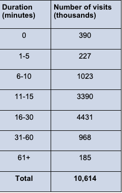
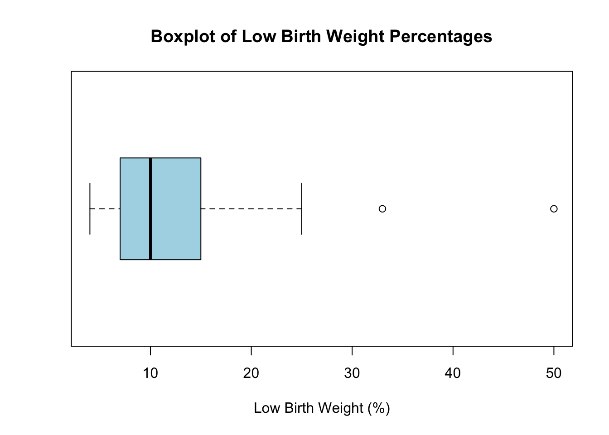
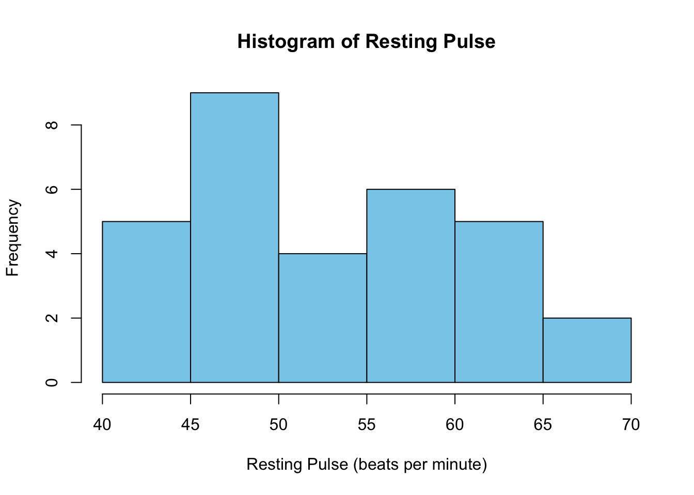
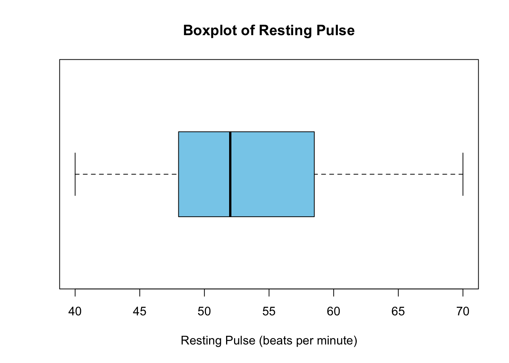
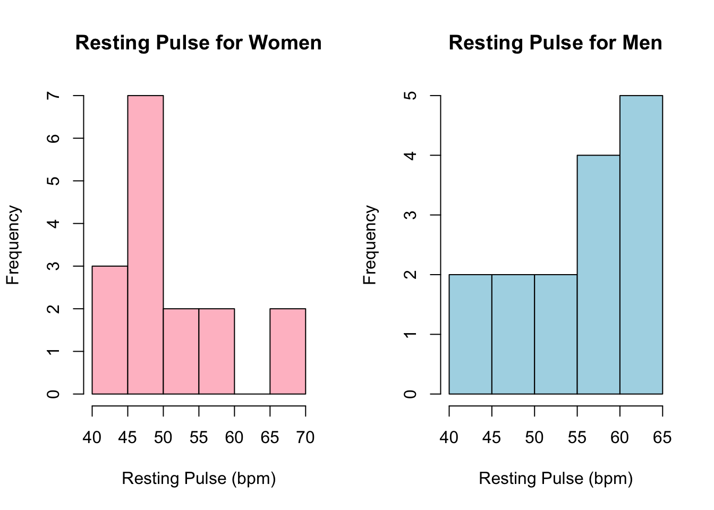
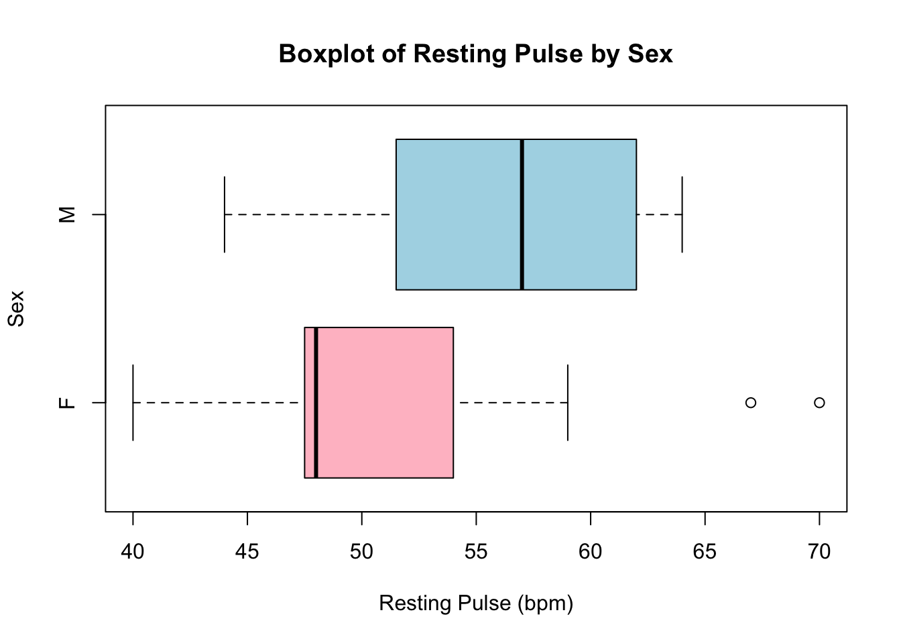
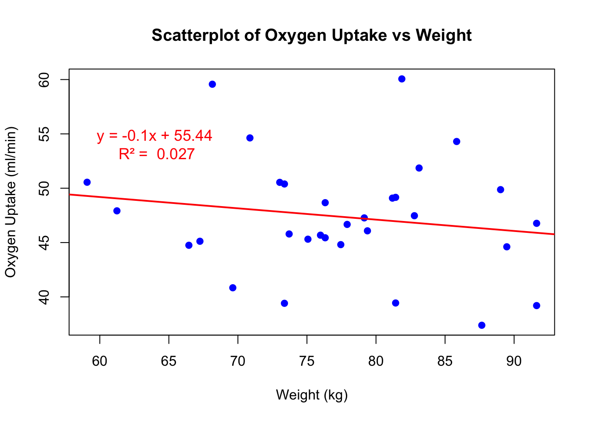

This file contains my responses for the takehome homework for unit 1 of the JHU Biostatistics course summer 2025 term. The file includes several written responses as well as box-plots. This includes answers to textbook problemns in Part 1 and statiscial plots made in R in Part 2.
For my first submission I will turn in a pdf of this file in addition to the Quarto Zip file. In future assignments, let me know if the PDF is sufficient.
Part 1 (Textbook Problems)
Q1 Continuous vs Discrete data types:
State whether each of the following observations is an example of discrete or continuous data.
a. The number of suicides in the United States in a specific year.
Discrete because this figure represents a coutable whole number, no fractions.
b. The concentration of lead in a sample of water.
Continuous because this is measured on a contiuous scale with decimals.
c. The length of time that a cancer patient survives after diagnosis.
Continuous because the figure is measured in time units which can be fractional.
d. The number of previous miscarriages an expectant mother has had.
Discrete because its coutable to whole numbers without fractions.
Q2 Cardiovascular Visit durations:
The table below categorizes 10,614,000 office visits to cardiovascular disease specialists in the United States by the duration of each visit. A duration of 0 minutes implies that the patient did not have face-to-face contact with the specialist.

Table denoting visit qty across different visit duration categories in the US
The statement is made that office visits to cardiovascular disease specialists are most often between 16 and 30 minutes. Do you agree with this statement? Why or why not?
The statement that most office visits to cardiovascular disease specialists are between 16 and 30 minutes is true. According to the provided data, this category has the highest number of visits—4,431 thousand, which exceeds all other duration categories. This indicates that the mode of the distribution falls within the 16–30 minute range.
However, it’s important to consider the generalizability of this finding. While the data provides insight into visit durations for this sample of US clinics, it may not fully represent other settings or populations. Studies on selection bias have highlighted that even in large-scale cohort designs, findings can be influenced by factors such as non-participation, loss to follow-up, or differences between those included and excluded from the study. In this case, factors like patient demographics, clinic capacity, or regional healthcare practices could influence the observed durations, thereby affecting the representativeness of these findings.
Thus, while the data supports the statement for this sample, caution should be exercised in generalizing the conclusion to the US as a whole or other countries without considering potential selection biases and differences across populations (Nohr & Liew, 2018).
Code Calculation/Validation
# load the data into a dataframeduration <-c("0", "1-5", "6-10", "11-15", "16-30", "31-60", "61+")visits <-c(390, 227, 1023, 3390, 4431, 968, 185)cardio_data <-data.frame(Duration = duration, Visits = visits)# Calcuate the mode (category with the max number of visits)max_visits <-max(cardio_data$Visits)mode_category <- cardio_data$Duration[which(cardio_data$Visits == max_visits)]# Print the modeprint(paste0("The mode (most frequent duration) is: ", mode_category, " minutes"))
[1] "The mode (most frequent duration) is: 16-30 minutes"
# Create a bar chartlibrary(ggplot2)ggplot(cardio_data, aes(x = Duration, y = Visits)) +geom_bar(stat ="identity", fill ="skyblue") +labs(title ="Number of Office Visits by Duration",x ="Visit Duration (minutes)",y ="Number of Visits (thousands)") +theme_minimal()
# Show the summary Tableknitr::kable(cardio_data, caption ="Summary of Office Visits by Duration")
Summary of Office Visits by Duration
Duration
Visits
0
390
1-5
227
6-10
1023
11-15
3390
16-30
4431
31-60
968
61+
185
Q3 Vitamin D intoxication across subgroups
In Massachusetts, eight individuals experienced an unexplained episode of vitamin D intoxication that required hospitalization; it was thought that these unusual occurrences might be the result of excessive supplementation of dairy milk. Blood levels of calcium and albumin–a type of protein–for each subject at the time of hospital admission are provided below.
Table denoting calcium level mmol/l across different Albumin levels
(a) Find the mean, median, standard deviation, and range of the recorded calcium levels,
The percentages of low birth weight infants in various countries around the world are contained in the data set unicef on the webpage (or the textbook CD). The measurements themselves are saved under the Variable lowbwt.
(a) Construct a boxplot for the percentages of low birth weight infants.
# Load the data from a TXT fileunicef_data <-read.table("unicef-1.txt", header=TRUE, sep=",", stringsAsFactors=FALSE)# View the structurestr(unicef_data)
'data.frame': 144 obs. of 4 variables:
$ Nation: chr "Afghanistan" "Albania" "Algeria" "Angola" ...
$ lowbwt: int 20 7 9 19 8 NA 6 6 NA 50 ...
$ life60: int 33 62 47 33 65 NA 71 69 NA 40 ...
$ life92: int 43 73 66 46 71 72 77 76 71 53 ...
# Remove missing values (NA) for lowbwtlowbwt_data <-na.omit(unicef_data$lowbwt)# Create a boxplotboxplot(lowbwt_data,main ="Boxplot of Low Birth Weight Percentages",xlab ="Low Birth Weight (%)",col ="lightblue",horizontal =TRUE)

(b) Do the data appear to be skewed? If so, are they skewed to the right or to the left?
The boxplot of low birth weight percentages shows a right-skewed (positively skewed) distribution. This is evident from the longer whisker on the upper end of the boxplot and the presence of higher outliers (countries with unusually high low birth weight percentages). The majority of the data is concentrated toward the lower end (with the median closer to the bottom of the box), while a few countries have substantially higher rates of low birth weight. This indicates that most countries have relatively low lowbwt values, but a small number of countries have extreme high values driving the skewness.
(c) Do the data contain any outlying observations?
# Load the dataunicef_data <-read.table("unicef-1.txt", header=TRUE, sep=",", stringsAsFactors=FALSE)# Filter to complete cases for lowbwtlowbwt_data <- unicef_data[!is.na(unicef_data$lowbwt), ]# Calculate summary statistics and IQRq1 <-quantile(lowbwt_data$lowbwt, 0.25)q3 <-quantile(lowbwt_data$lowbwt, 0.75)iqr <- q3 - q1lower <- q1 -1.5* iqrupper <- q3 +1.5* iqrmean_val <-mean(lowbwt_data$lowbwt)# Prepare labeled summary with explanationslabels <-c("Minimum", "1st Quartile (Q1)", "Median (Q2)", "Mean", "3rd Quartile (Q3)", "Maximum", "IQR")values <-c(round(min(lowbwt_data$lowbwt), 2),round(q1, 2),round(median(lowbwt_data$lowbwt), 2),round(mean_val, 2),round(q3, 2),round(max(lowbwt_data$lowbwt), 2),round(iqr, 2))explanations <-c("(Lowest observed low birth weight)","(25% of data below this value)","(Middle value of the data)","(Average low birth weight)","(75% of data below this value)","(Highest observed low birth weight)","(Spread of middle 50% of data)")summary_output <-paste(labels, ": ", values, "% ", explanations, sep ="")cat("Summary Statistics:\n", paste(summary_output, collapse ="\n"), "\n\n")
Summary Statistics:
Minimum: 4% (Lowest observed low birth weight)
1st Quartile (Q1): 7% (25% of data below this value)
Median (Q2): 10% (Middle value of the data)
Mean: 11.96% (Average low birth weight)
3rd Quartile (Q3): 15% (75% of data below this value)
Maximum: 50% (Highest observed low birth weight)
IQR: 8% (Spread of middle 50% of data)
.Using the “Fitness” data set (available on the class webpage), create:
A histogram and boxplot of Resting Pulse (RstPulse) for everyone in the sample
# Load data from Fitness-1.txtfitness_data <-read.table("Fitness-1.txt", header=TRUE, sep=",", stringsAsFactors=FALSE)# Histogram of Resting Pulsehist(fitness_data$RstPulse,main ="Histogram of Resting Pulse",xlab ="Resting Pulse (beats per minute)",col ="skyblue",border ="black")

# Boxplot of Resting Pulseboxplot(fitness_data$RstPulse,main ="Boxplot of Resting Pulse",xlab ="Resting Pulse (beats per minute)",col ="skyblue",horizontal =TRUE)

Separate histograms of Resting Pulse for men and women.
# Load data from Fitness-1.txtfitness_data <-read.table("Fitness-1.txt", header=TRUE, sep=",", stringsAsFactors=FALSE)# Set up side-by-side plottingpar(mfrow =c(1, 2))# Histogram for Womenhist(fitness_data$RstPulse[fitness_data$Sex =="F"],main ="Resting Pulse for Women",xlab ="Resting Pulse (bpm)",col ="pink",border ="black")# Histogram for Menhist(fitness_data$RstPulse[fitness_data$Sex =="M"],main ="Resting Pulse for Men",xlab ="Resting Pulse (bpm)",col ="lightblue",border ="black")

One plot with boxplots for men and women side by side
# Load data from Fitness-1.txtfitness_data <-read.table("Fitness-1.txt", header=TRUE, sep=",", stringsAsFactors=FALSE)# Create horizontal boxplot of RstPulse by Sexboxplot(RstPulse ~ Sex,data = fitness_data,main ="Boxplot of Resting Pulse by Sex",ylab ="Sex",xlab ="Resting Pulse (bpm)",col =c("pink", "lightblue"),horizontal =TRUE)

A scatterplot of Oxygen uptake (Oxy) and Weight.
# Load data from Fitness-1.txtfitness_data <-read.table("Fitness-1.txt", header=TRUE, sep=",", stringsAsFactors=FALSE)# Scatterplotplot(fitness_data$Weight, fitness_data$Oxy,main ="Scatterplot of Oxygen Uptake vs Weight",xlab ="Weight (kg)",ylab ="Oxygen Uptake (ml/min)",pch =19,col ="blue")# Linear modelmodel <-lm(Oxy ~ Weight, data = fitness_data)abline(model, col="red", lwd=2)# Extract slope and interceptslope <-coef(model)[2]intercept <-coef(model)[1]equation <-paste0("y = ", round(slope, 2), "x + ", round(intercept, 2))# Calculate R-squaredr2 <-summary(model)$r.squared# Add equation and R-squared texttext(x =max(fitness_data$Weight)*0.7, y =max(fitness_data$Oxy)*0.9, labels =paste(equation, "\nR² = ", round(r2, 3)),col ="red", cex=1.1)

(a) What is the median Resting Pulse overall?
# Load datafitness_data <-read.table("Fitness-1.txt", header=TRUE, sep=",", stringsAsFactors=FALSE)# Compute median of Resting Pulse (RstPulse)median_rstpulse <-median(fitness_data$RstPulse, na.rm=TRUE)# Print resultcat("The median Resting Pulse (RstPulse) across the sample is:", median_rstpulse, "bpm\n")
The median Resting Pulse (RstPulse) across the sample is: 52 bpm
(b) For Women?
# Load datafitness_data <-read.table("Fitness-1.txt", header=TRUE, sep=",", stringsAsFactors=FALSE)# Compute median Resting Pulse for Womenmedian_rstpulse_women <-median(fitness_data$RstPulse[fitness_data$Sex =="F"], na.rm=TRUE)# Print resultcat("The median Resting Pulse for women is:", median_rstpulse_women, "bpm\n")
The median Resting Pulse for women is: 48 bpm
(c) For Men?
# Load datafitness_data <-read.table("Fitness-1.txt", header=TRUE, sep=",", stringsAsFactors=FALSE)# Compute median Resting Pulse for Menmedian_rstpulse_men <-median(fitness_data$RstPulse[fitness_data$Sex =="M"], na.rm=TRUE)# Print resultcat("The median Resting Pulse for men is:", median_rstpulse_men, "bpm\n")
The median Resting Pulse for men is: 57 bpm
(d) Is the Overall mean Resting Pulse bigger or smaller than the Overall median Resting Pulse?
# Load datafitness_data <-read.table("Fitness-1.txt", header=TRUE, sep=",", stringsAsFactors=FALSE)# Calculate mean and medianmean_rstpulse <-mean(fitness_data$RstPulse, na.rm=TRUE)median_rstpulse <-median(fitness_data$RstPulse, na.rm=TRUE)# Print results and comparisoncat("Mean Resting Pulse:", round(mean_rstpulse, 2), "bpm\n")
if(mean_rstpulse > median_rstpulse){cat("The mean Resting Pulse is greater than the median Resting Pulse.\n")} elseif(mean_rstpulse < median_rstpulse){cat("The mean Resting Pulse is smaller than the median Resting Pulse.\n")} else {cat("The mean and median Resting Pulse are equal.\n")}
The mean Resting Pulse is greater than the median Resting Pulse.
(e) What does this suggest about the shape of the distribution?
If the mean Resting Pulse is greater than the median Resting Pulse, this suggests that the distribution of RstPulse is right-skewed (positively skewed). In such a distribution, the longer tail on the right side pulls the mean higher than the median. This indicates that while most participants have lower resting pulse rates, a few individuals with exceptionally high resting pulses are increasing the mean. Conversely, if the mean is smaller than the median, the distribution would be left-skewed (negatively skewed), suggesting a tail on the lower end. However, in this case, given typical pulse data and the expectation from most physiological datasets, it’s likely that the data is right-skewed, driven by a few high outliers.
(f) Which gender has a larger inter-quartile Range (IQR) for Resting Pulse?
# Load datafitness_data <-read.table("Fitness-1.txt", header=TRUE, sep=",", stringsAsFactors=FALSE)# Calculate IQR for womeniqr_women <-IQR(fitness_data$RstPulse[fitness_data$Sex =="F"], na.rm=TRUE)# Calculate IQR for meniqr_men <-IQR(fitness_data$RstPulse[fitness_data$Sex =="M"], na.rm=TRUE)# Print results and comparisoncat("IQR of Resting Pulse for Women:", round(iqr_women, 2), "bpm\n")
IQR of Resting Pulse for Women: 5.25 bpm
cat("IQR of Resting Pulse for Men:", round(iqr_men, 2), "bpm\n")
IQR of Resting Pulse for Men: 10.5 bpm
if(iqr_women > iqr_men){cat("Women have a larger IQR for Resting Pulse.\n")} elseif(iqr_women < iqr_men){cat("Men have a larger IQR for Resting Pulse.\n")} else {cat("Men and Women have the same IQR for Resting Pulse.\n")}
Men have a larger IQR for Resting Pulse.
(g) Does there seem to be a relationship between Weight and Oxygen uptake? Briefly explain your answer.
Based on the scatterplot of Oxygen Uptake (Oxy) vs Weight, there appears to be a moderate positive relationship between the two variables. As weight increases, oxygen uptake also tends to increase, suggesting that heavier individuals may generally have higher oxygen consumption during physical activity. The linear trendline in the scatterplot, with its upward slope, indicates this positive association. However, the R² value is not particularly high, which implies that while weight contributes to oxygen uptake levels, it does not explain all of the variation. Other factors such as fitness level, age, and gender likely also play a role. Overall, while a positive association exists, it is not particularly strong or definitive and should be interpreted alongside other variables that influence oxygen uptake.
Sources:
Nohr, E. A., & Liew, Z. (2018). How to investigate and adjust for selection bias in cohort studies. Acta obstetricia et gynecologica Scandinavica, 97(4), 407–416. https://doi.org/10.1111/aogs.13319
Thank you for reiewing my work, please enjoy this figure of a motor protein for making it to the end